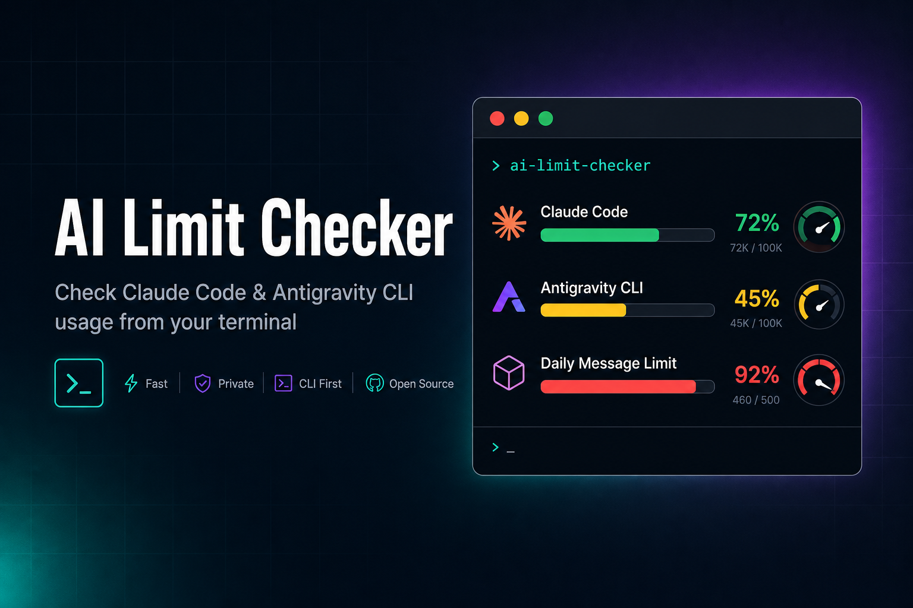

AI Limit Checker
Check usage limits for Claude Code and Antigravity CLI straight from your terminal — zero dependencies, cross-platform.



Check usage limits for Claude Code and Antigravity CLI straight from your terminal — zero dependencies, cross-platform.
5h & 7d usage windows with a Sonnet breakdown.
Per-group (Gemini / Claude+GPT) weekly & five-hour limits.
Detect when a 5h limit resets and auto-trigger a fresh window.
Structured output that AI agents and scripts can parse.
Pure Python stdlib — no pip conflicts, fast installs.
Tokens are never printed; only official endpoints are called.
pip install ai-limit-checkerRequires Python 3.10+. No external dependencies. Two commands are installed — aichecker and ailimits — both run the same tool.
# Show all limits (default)
aichecker
# JSON output for AI agents / scripts
aichecker --json
# Compact one-liner (great for shell prompts / tmux status bars)
aichecker --oneline
# Check only one tool
aichecker --claude
aichecker --antigravity
# Watch mode: poll and ping the CLI when a 5h window resets
aichecker --watch
aichecker --watch --once # single check, ideal for cron🔍 AI CLI Usage Checker
2026-06-29 12:00:00
════════════════════════════════════════
Claude Code (Max Plan)
════════════════════════════════════════
✅ Connected
5h Window: 1.0% used (99.0% left) → resets in 4h 56m
7d Window: 56.0% used (44.0% left) → resets in 2d 17h
════════════════════════════════════════
Antigravity CLI
════════════════════════════════════════
✅ Connected
Tier: Google AI Ultra
Gemini Models
Weekly Limit: 0.0% used → resets in 6d 23h
Five Hour Limit: 0.0% used → resets in 4h 59m
Claude and GPT models
Weekly Limit: 93.0% used → resets in 2d 20h
Five Hour Limit: 95.0% used → resets in 19mOne-liner mode (--oneline):
Claude: 1.0% (5h) ✅ | 56.0% (7d) ✅ | Antigravity: 95.0% used 🔴Structured JSON with all limits, remaining percentages, and reset timestamps — perfect for AI agents planning task delegation based on remaining quota.
{
"claude": {
"status": "ok",
"plan": "max",
"five_hour": { "used_pct": 1.0, "remaining_pct": 99.0, "resets_at": "2026-06-29T16:31:00Z" },
"seven_day": { "used_pct": 56.0, "remaining_pct": 44.0, "resets_at": "2026-07-02T05:00:00Z" }
},
"antigravity": {
"status": "ok",
"tier": "Google AI Ultra",
"is_paid": true,
"groups": [ /* per-group weekly + 5h buckets */ ],
"highest_used_pct": 95.0
}
}Reads OAuth credentials from ~/.claude/.credentials.json (or the macOS Keychain) and calls the official Anthropic usage API for the 5h and 7d windows.
Reads Google OAuth credentials (Windows Credential Manager or ~/.gemini/oauth_creds.json) and queries the same Cloud Code endpoint the desktop app uses for grouped weekly/5h limits.